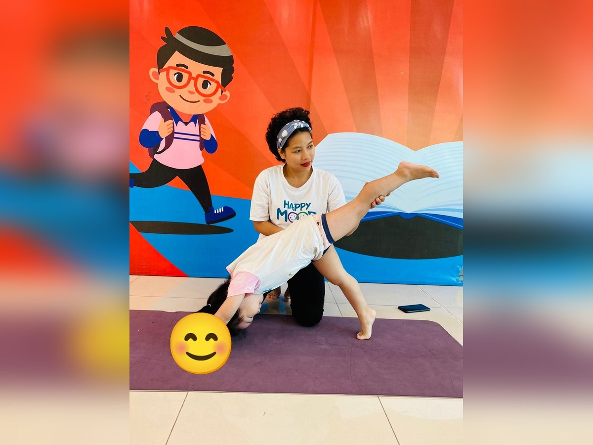
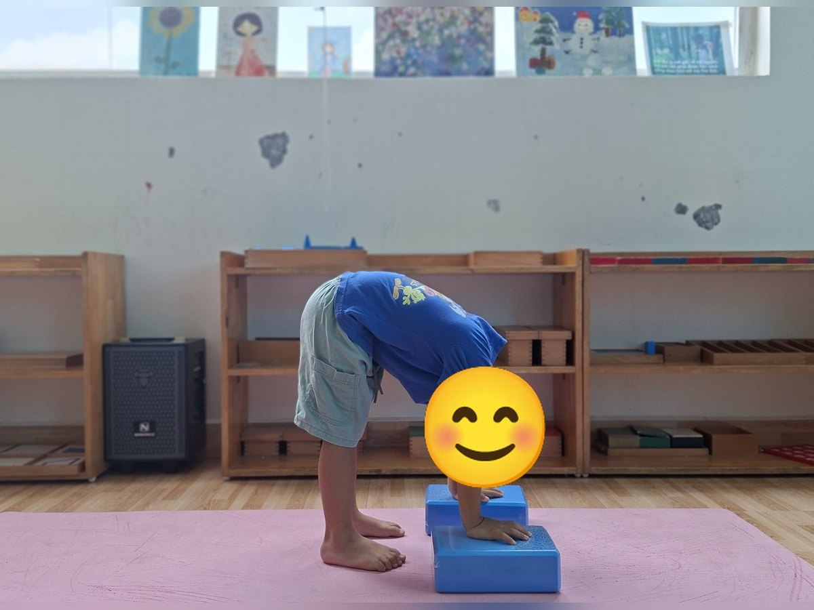
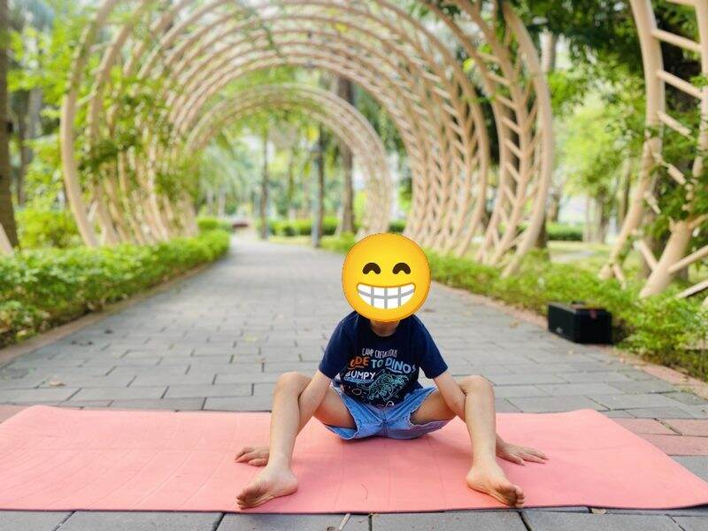
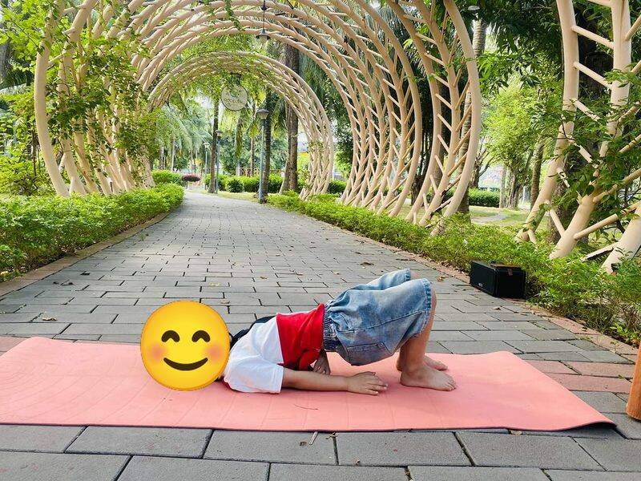
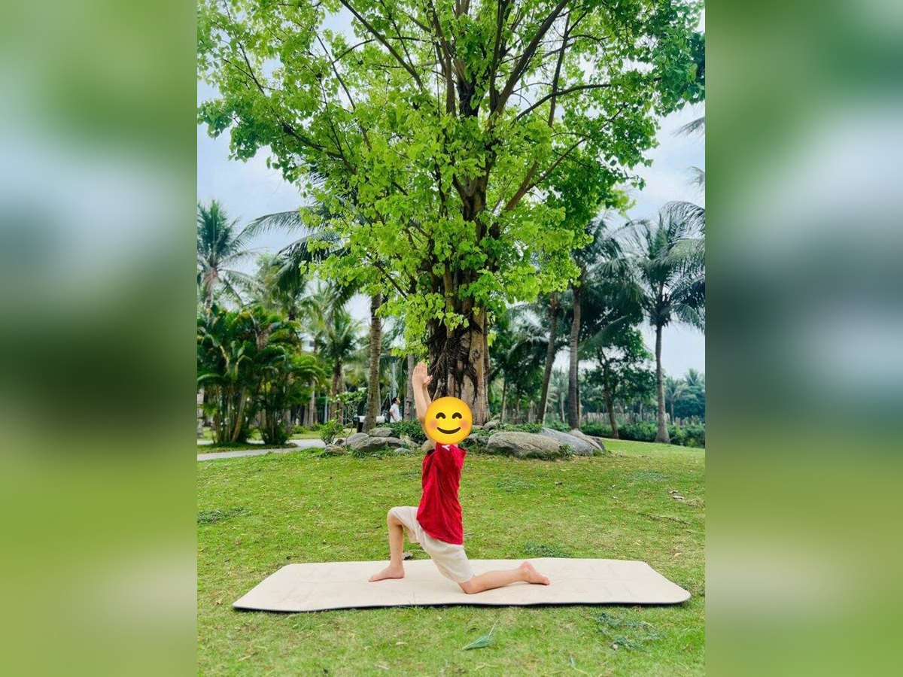

Chủ đề 17 · Màu sắc, cầu vồng
Tắc Kè Hoa đi tìm màu sắc
🌟 Bài học trong câu chuyện
Giới luật yoga: Santosha – Vui với những gì mình có. Bé biết hài lòng, mỉm cười với điều mình đang có.
Kỹ năng sống: Nhận biết màu sắc, yêu màu da của mình.
1. Khởi động (2 phút)
Cả lớp ngồi xếp bằng thành vòng tròn. Cùng thở 3 hơi thở bông hoa: hít vào bằng mũi như ngửi hoa, thở ra bằng miệng thật chậm. Chắp tay trước ngực và chào nhau: “Namaste, chào các bạn!”
2. Câu chuyện: Tắc Kè Hoa đi tìm màu sắc (đọc cho bé nghe, 4 phút)
Cô đọc trọn câu chuyện cho bé nghe trước. Sau đó cô kể lại từng đoạn ngắn và cả lớp cùng tập 10 tư thế ở phần bên dưới.
Trong khu rừng nhiệt đới có bạn Tắc Kè Hoa. Tắc Kè có phép lạ: đứng cạnh cái gì là đổi sang màu của cái đó. Nhưng hôm nay Tắc Kè buồn thiu: "Mình chẳng có màu nào là của riêng mình cả". Thế là Tắc Kè lên đường đi tìm màu đẹp nhất.
Tắc Kè gặp bạn Cua đỏ đang bò ngang trên bãi cát. "Màu đỏ đẹp quá!", và Tắc Kè đổi sang màu đỏ. Rồi Tắc Kè gặp bác Hổ khoác bộ áo cam sọc đen, Tắc Kè đổi sang màu cam. Ông mặt trời vàng rực chiếu xuống, Tắc Kè thành màu vàng. Bạn Ếch xanh nhảy "ộp ộp", Tắc Kè thành màu xanh lá.
Ra đến biển, chị Cá Voi xanh phun nước lên trời, Tắc Kè thành màu xanh dương. Đêm xuống, bầu trời màu chàm có vầng trăng cong cong, Tắc Kè đổi màu chàm. Sáng ra, Tắc Kè thấy bông hoa tím, lại đổi màu tím. Đổi màu mãi, Tắc Kè mệt quá, nằm nghỉ như đám mây trắng và nghĩ: "Đổi bao nhiêu màu rồi mà mình vẫn chưa thấy vui".
Bạn Mèo Đen đi qua: "Tớ chỉ có màu đen thôi, nhưng tớ thích màu của tớ lắm". Cô Hồng Hạc đứng một chân bên hồ, mỉm cười: "Tắc Kè ơi, bạn mang được tất cả các màu của cầu vồng. Đó chính là màu của riêng bạn đấy!"
Tắc Kè Hoa bỗng hiểu ra. Tắc Kè đổi lần lượt bảy màu cầu vồng cho các bạn xem, ai cũng vỗ tay. Từ hôm đó, Tắc Kè vui với chính mình.
3. Kể lại và tập 10 tư thế (6 phút)
-
 1
1Màu đỏ: con cua
🧘 Tư thế Con cua (Crab)
Lời kể khi tập: Tắc Kè gặp bạn Cua đỏ đang bò ngang. "Màu đỏ đẹp quá!". Tắc Kè đổi sang màu đỏ.
Cách làm: Ngồi, tay chống phía sau, bàn chân chống trước, nâng hông lên rồi bò ngang. Giữ 3 đến 5 nhịp thở.
-

2Màu cam: con hổ
🧘 Tư thế Hổ vươn chân (Three-Legged Dog)
Lời kể khi tập: Bác Hổ cam vươn chân: "Màu cam của ta là đẹp nhất". Tắc Kè đổi sang màu cam.
Cách làm: Chống tay và chân xuống thảm, nâng mông cao thành ngọn núi, rồi nhấc một chân duỗi thẳng lên cao phía sau. Đổi chân. Cô có thể đỡ hông bé như trong ảnh. Giữ 3 đến 5 nhịp thở.
-

3Màu vàng: mặt trời
🧘 Tư thế Chào mặt trời (Sun Salutation)
Lời kể khi tập: Ông mặt trời vàng rực chào buổi sáng. Tắc Kè thành màu vàng.
Cách làm: Đứng thẳng, hít vào vươn hai tay lên cao chào mặt trời, thở ra cúi gập người, hai tay chạm chân hoặc chống lên viên gạch như trong ảnh, rồi hít vào từ từ đứng lên. Giữ 3 đến 5 nhịp thở.
-

4Màu xanh lá: con ếch
🧘 Tư thế Con ếch (Frog)
Lời kể khi tập: Ếch xanh nhảy "ộp ộp". Tắc Kè nhảy theo và thành màu xanh lá.
Cách làm: Ngồi xổm, hai tay chạm sàn giữa hai chân, bật nhảy nhẹ và kêu "ộp ộp". Giữ 3 đến 5 nhịp thở.
-

5Màu xanh dương: cá voi
🧘 Tư thế Cây cầu (Bridge)
Lời kể khi tập: Cá voi xanh phun nước thành cầu vồng. Tắc Kè thành màu xanh dương.
Cách làm: Nằm ngửa, co gối, bàn chân đặt trên sàn, nâng hông lên cao như cây cầu. Giữ 3 đến 5 nhịp thở.
-

6Màu chàm: mặt trăng
🧘 Tư thế Trăng lưỡi liềm (Kneeling Crescent)
Lời kể khi tập: Bầu trời đêm màu chàm, có vầng trăng cong cong. Tắc Kè làm vầng trăng lưỡi liềm.
Cách làm: Bước dài một chân ra trước, gập gối trước, hạ gối sau xuống thảm, hai tay vươn cao qua đầu, ngực mở cong như vầng trăng lưỡi liềm. Mới tập thì chống hai tay lên viên gạch hai bên chân trước. Giữ 3 đến 5 nhịp thở.
-
 7
7Màu tím: bông hoa
🧘 Tư thế Hoa sen (Lotus)
Lời kể khi tập: Bông hoa tím thơm ngát. Tắc Kè đổi màu tím, mệt quá rồi!
Cách làm: Ngồi xếp bằng, lưng thẳng, hai tay đặt trên gối, ngón cái chạm ngón trỏ như búp sen, thở thật chậm. Giữ 3 đến 5 nhịp thở.
-
 8
8Màu trắng: đám mây
🧘 Tư thế Em bé (Child's Pose)
Lời kể khi tập: Tắc Kè nằm nghỉ như đám mây trắng và nghĩ: đổi màu mãi, mình chẳng thấy vui hơn.
Cách làm: Quỳ gối, ngồi lên gót chân, cúi người cho trán chạm thảm, hai tay duỗi ra trước hoặc để xuôi bên người. Giữ 3 đến 5 nhịp thở.
-
 9
9Màu đen: mèo đen
🧘 Tư thế Con mèo (Cat)
Lời kể khi tập: Mèo Đen nói: "Tớ chỉ có màu đen, nhưng tớ thích màu của tớ lắm".
Cách làm: Chống tay và gối xuống thảm, thở ra cong lưng lên cao, cúi đầu nhìn rốn. Giữ 3 đến 5 nhịp thở.
-
 10
10Màu hồng: chim hồng hạc
🧘 Tư thế Hồng hạc (Flamingo)
Lời kể khi tập: Hồng Hạc mỉm cười: "Màu nào cũng đẹp. Bạn có tất cả các màu, thật tuyệt!". Tắc Kè vui vẻ trở lại.
Cách làm: Đứng một chân, co chân kia lên, hai tay dang như cánh chim. Giữ 3 đến 5 nhịp thở.
4. Thư giãn (2 phút)
Các con nằm ngửa, tay chân thả lỏng, nhắm mắt lại. Cô nói nhẹ: “Hít vào thật chậm… thở ra thật chậm… Con nhớ lại câu chuyện vừa rồi, nhớ người bạn mình thích nhất trong truyện. Cơ thể con mềm như bông, nhẹ như mây.” Sau đó các con nghiêng người, từ từ ngồi dậy.
5. Trò chuyện cùng bé (1 phút)
Tắc Kè Hoa hiểu rằng mình đã đẹp sẵn rồi, không cần giống ai. Vui với những gì mình có là Santosha.
Cô hỏi các con:
- Con thích màu gì nhất?
- Con thích điều gì ở chính mình?
Kết thúc bằng lời chào “Namaste” và một nụ cười.
Lưu ý cho thầy cô và bố mẹ: Tập trên thảm, không tập ngay sau khi ăn no. Bé chỉ làm tới mức thấy dễ chịu, không ép bé. Tư thế đứng một chân có thể cho bé vịn tường hoặc vịn tay người lớn.